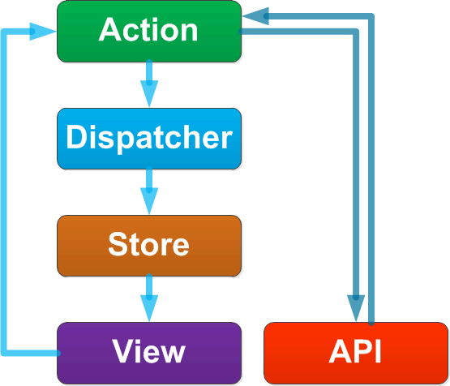
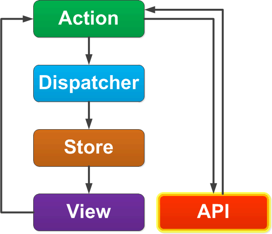
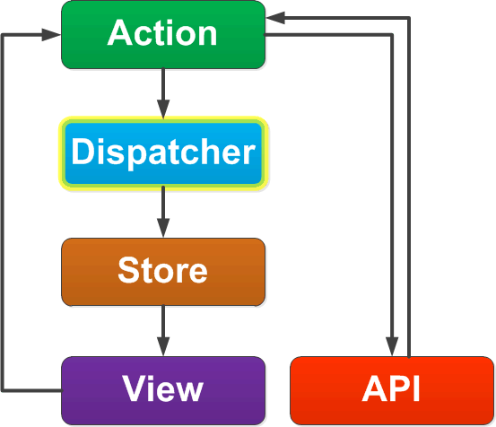
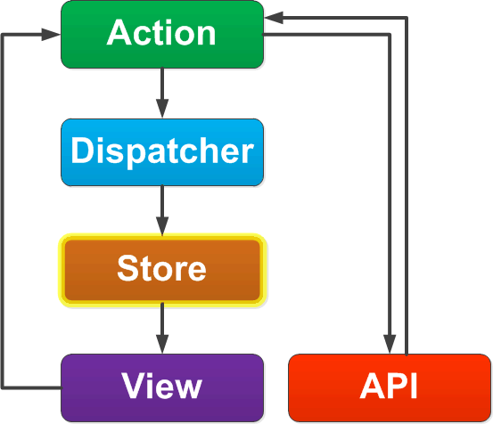
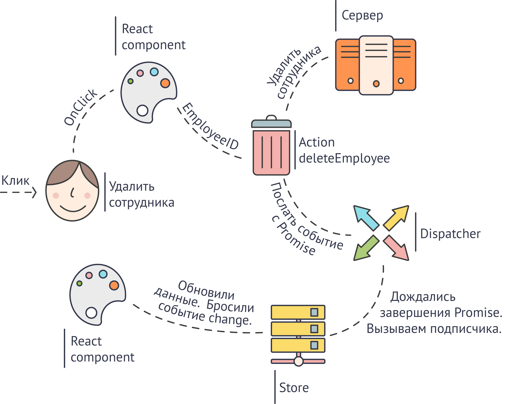
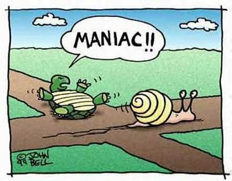

Flux
Что это? Зачем это? Как это?
Николай Смирнов / @nickolaysm
Требования к слушателю
Понимать принципов ReactJS
Желательно иметь опыт реализации
План
- Немного о ReactJS. Зачем нужен Flux?
- Flux - не MVC. Архитектура. Плюшки
- Немного философии, почему react + flux это хорошо
Пять стадий принятия React
- Отрицание
- Гнев
- Торг
- Депрессия
- Принятие
Отрицание
- Я ищу крутую библиотеку, что бы быстро и гибко создавать клиента/компоненты под веб.
- Да их тут свалка целая, но есть явные лидеры.
-
React? Что?! Бред какой-то, это не может работать. Даже пробовать не буду.
Гнев
- Да «либы» крутые, много что могут. Но как же долго в них въезжать.
- Все есть, но тратишь кучу времени для поиска решения.
- Тяжко разрабатывать.
- Нет щасья в жизни.
Торг
- Может reactJS глянем?
- Это не может работать. Да и полезность сомнительная.
- Вот если получиться за пол часика пример своять, то попробую.
- Ха. Вроде все простенько так и понятненько.
Депрессию пропускаем :)
- Делаем маленький компонент.
- Ха! Работает. И вроде не сложно и удобно.
- Нет ощущения, что кирпичи таскаешь, как раньше.
- Сделаем компонент побольше.
Принятие
- Тоже работает!
- И делаешь на одном дыхании.
- Хотя не хватает элегантности, надо что-то сделать с колбеками.
- Их много, ну да пока терпимо, подумаем потом.
Прошло пол года
Эйфория!
Где я?
Все новое, на React. И это понятно.
Но уже переписываем то что и так хорошо работает!
Это ж ВИРУС!!!
А не пора ли нам замахнуться на…
Сделаем приложение полностью на react
- А как? Уже на большом компоненте было много колбеков
- Заменить модель на бекбон? Чего-то не хочется.
- Все эти angular, backbone, ember - бесовские изобретения.
Что делать?
Ищем ближайшего админа, забираем бубен!
Взываем к фейсбуку!!!
Flux?
Что за зверь?! Вот бы библиотеку дать, так нет.
На! Получай паттерн.
«Ты ж пытливый ум, держи игрушку» @Фейсбук
(мне кажется, они так думают)
О Flux
Бытует мнение, что Flux не самая простая идея.
Бред, конечно
Flux - это очень просто и эффективно
Нужно только слегка моск подкорректировать
Что такое Flux
По началу, что бы понять Flux каждый делал свою реализацию. Поэтому на github их не счесть. Сейчас, конечно в этом необходимость отпала. Много хороших реализаций и подробных статей.
Flux для глупых людей:
http://habrahabr.ru/post/249279/
Так что же такое Flux?
Это не:
- технология
- фреймворк
- библиотека
- ...
Это чистый разум - паттерн
Предложен фейсбуком
Flux не MVC
И лучше избегать сравнений
Помогает оставаться в рамках функциональных и реактивных идей.
Что в целом хорошо.
Так как все эти MVC и MVP в императивных языках – очень УБОГИ.
(ИМХО, ваще ИМХО, т.е. совсем ИМХО)
Flux - паттерн
Поток данных

Все данные, а в случае реактивной парадигмы это означает, и события, и действия – распространяются в одном направлении
Внешнее API

Только Action может общаться с внешним API.
Например: отправлять запросы на сервер.
Action
Action содержит всю логику.
Только отсюда можно обращаться к внешним API.
Например: Добавить нового сотрудника, фильтровать список сотрудников…
Dispatcher

Регистрирует все события о завершении Action.
Позволяет Store подписаться на них
Есть готовые реализации
Store

Содержит модель данных.
Знает как применить результат от Action к модели.
View
Содержит метод отрисовки данных получаемых из Store.
Срабатывает на изменение Store.
Типовой процесс
Готовые реализации
- Dispatcher от facebook + microevent.js + vanilla.js
- yahoo/fluxible
- refluxjs
- flummox
На примере Flummox

Action
Зададим все пользовательские действия:
import { Actions } from 'flummox';
class ActionEmployee extends Actions {
filter(filter){
return ... Можно вернуть значения или Promise
}
loadEmployee(id){
return ... Можно вернуть значения или Promise
}
saveEmployee(employee){
return ... Можно вернуть значения или Promise
}
}
Store
Перехватим пользовательские действия:
import { Store } from 'flummox';
class StoreEmployee extends Store {
constructor(flux) {
super();
const actions = flux.getActions('action');
this.register(actions.filter, this.handleFilter);
this.state = { employees : [] };
}
handleFilter(message) {
console.log("handleFilter", message);
this.setState({
employees : message
});
}
}
Инициализация Flux
import {Flux} from 'flummox';
import FluxComponent from 'flummox/component';
import ActionEmployee from "./Action.jsx";
import ApplicationStore from "./Store.jsx";
class ApplicationFlux extends Flux {
constructor() {
super();
this.createActions('action', ActionEmployee);
this.createStore('store', ApplicationStore, this);
}
}
Приложение
import React from 'react';
import FluxComponent from 'flummox/component';
import flux from './app.jsx'
class ApplicationView extends React.Component {
render() {return (
<FluxComponent flux={flux} connectToStores={['store']}>
<ViewEmployeeCounter/>
</FluxComponent>
<FluxComponent flux={flux} connectToStores={['store']}>
<ViewEmployeesFilter/>
<ViewEmployees/>
</FluxComponent>
);}
}
Компонент - список пользователей
import React from 'react';
var ViewEmployees = React.createClass({
load : function(){
this.props.flux.getActions('action').filter();
},
render: function() {
var emps = this.props.employees.map(function(item){
return(<div key={item.uuid}> {item.name} </div>)
});
return (
<div className="grid">
<div onClick={this.load}>Показать Сотрудников</div>
{emps}
</div>)
}
...
Компонент - количество сотрудников
var ViewEmployeeCounter = React.createClass({
render: function() {
console.log("ViewEmployeeCounter");
return (
<span>{this.props.employees.length}</span>
);
}
})
Фильтр
var ViewEmployeesFilter = React.createClass({
keyPress: function(event) {
if(event.keyCode == 13)
this.props.flux.getActions('action')
.filter({text: event.target.value});
},
render: function() {
console.log("ViewEmployeesFilter");
return (
Фильтр:
<input type="text" onKeyUp={this.keyPress}/>
);
}...
Литература
Flux для глупых людей - http://habrahabr.ru/post/249279/
более чем достаточно
github.com/rackt/redux
- Сильно переосмысленная реализация Flux
- «Кроссплатформенная» - не требует react
- Store – один, имутабельный
- Изменение в Store делаются через функцию reducer
- Action - по сути без изменений
- View - разделен на два Smart (FluxComponent) и Dummy (View)
- Всё есть функция высшего порядка
- + + +
Немного вкусняшек
Реактивность и функциональность
- React и Flux – сами сильно пропитаны функциональными и реактивными идеями, а это дает возможность развивать их в этом направлении.
- Что сильно облегчает разработку именно UI и особенно под веб.
- Такие вещи как immutable коллекции, чистые функции т.д.
Колбеки
- Древовидная структура приложения или компонента на reactJS, заставляет передавать множество колбеков.
- Что доставляет много неприятностей.
- Flux полностью избавляет от callback, создавая однонаправленное движение данных и событий.
Лог всех действий
- Все действия осуществляются через Action.
- Action – функция с определенными входными и выходными параметрами.
- Можно осуществить логирования параметров.
- Легко повторить ошибку получив лог от тестера.
- Фича - воспроизведение действий пользователя, например в графическом редакторе https://precursorapp.com
Сохранение состояния
- В любой момент можем сохранить все Store.
Восстановив их продолжить работу с системой. - Если использовать immutable структуры данных в Store, то получим еще и историю изменения с возможностью отката, которую тоже можно сохранить/восстановиться.
- Redux в этом плане может помочь.
- Векторный редактор http://tonsky.me/vec/.
Оптимистичный рендеринг
- Превью – спекулятивный рендеринг
- Пока сервер обрабатывает запрос, можем поменять модель данных. Перерисовав интерфейс.
- После получения ответа от сервера, поменять данные в Store и перерисовать снова.
Обновление на горячую
- Action – “чистые” функции, не зависят от окружения.
- View – чистые компоненты не зависят от кружения.
- Store – можем сериализовать все состояние системы.
- Поэтому бизнес логику и логику визуализации легко обновлять на горячую.
Оптимизация отрисовки
- Если в Store использовать immutable коллекции, то «бесплатно» получаем ленивый рендеринг.
- Отказаться от отрисовки дерева, сравнив данные по ссылке.
Вменяемый ОО синтаксис
- Не смотря на свою функциональную природу reactJS и Flux имеют очень даже объектное представление.
- Что упрощает обучение сотрудников.
- Используются функциональные и реактивные принципы, которые удачно скрываются от junior разработчиков.
- Это хорошо. Все-таки чистые функциональные языки в промышленной разработке как-то не очень прижились.
Готовое архитектурное решение
Разделяет:
- данные,
- бизнес логику,
- отрисовку.
Облегчение тестирования
Поскольку изначально архитектура заставляет разделить логику, данные и отрисовку:
- Легко начать писать тесты, даже если на этапе стартапа этого не делали
Немного философии
Почему react и flux это хорошо?
Почему философии?
Сравнения всегда лукавы!
Ощущения при создании UI
Да библиотеки вроде мощные, сделать можно все.
Но как будто кирпичи на стройке носишь, устаешь жутко.
Постоянное недовольство от процесса.
А под Web – двойное недовольствие.
Часто задаваемый вопрос новичка
- А что на счет производительности у react?
- Не правильный вопрос!
- Правильно – а что на счет производительность у меня?
Ищу чего-то
- И вот ищешь постоянно какую-то серебряную пулю.
- Хотя бы библиотеку которую с удовольствием возьмешь для проекта с нуля
- Но нет таких
И вот react
Будто на самолет сел :)
Что мы ждем от технологии
Требование к технологии – увеличение производительности программиста желательно здесь и сейчас, а так же в среднесрочной и долгосрочной перспективе
- т.е. быстрый старт
- отсутствие функциональных ограничений в обозримом будущем
- перспективы развития
- надежность производителя
Готовое архитектурное решение
Позволяет разделить
- данные,
- бизнес логику,
- отрисовку
А значит берем джуниоров, говорим: делай раз, делай два, делай три
Легкий переход
Проекты на react легко переводить. Бенефиты идут сразу. Можно разрабатывать как маленькие компоненты, так и целые сайты. Все ложится хорошо.
Никаких сравнений
Просто с react реально прёт!